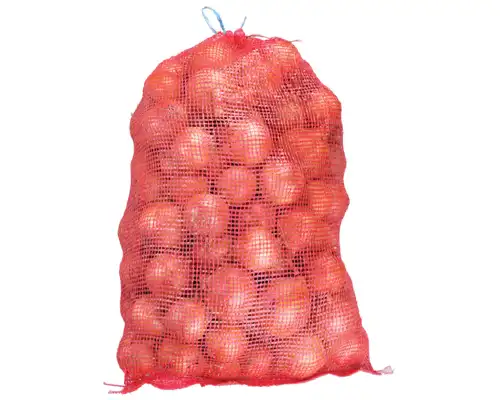
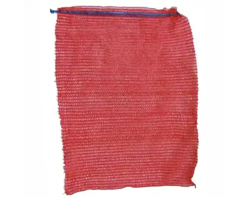
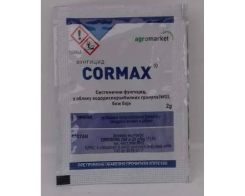

Ambalaža
Džak Rashel 40×60
Džak Rashel dimenzija 40×60 cm praktično je rešenje za pakovanje, skladištenje i transport poljoprivrednih proizvoda i različitih materijala.
12 RSD
Pogledaj proizvod →Zajedno do boljih prinosa!
Pronađite kvalitetnu opremu i proizvode za svakodnevne potrebe savremene poljoprivrede.
Pogledaj proizvode →O Agropartner Plus-u
Agropartner Plus je lokalna prodavnica poljoprivredne opreme i proizvoda u Subotici, namenjena svima koji se bave poljoprivredom, baštovanstvom i negom biljaka. Naša priča nastala je iz iskrenog interesovanja za poljoprivredu i želje da kvalitetni i korisni proizvodi budu dostupni ljudima kojima su zaista potrebni.
Iza Agropartner Plus-a stoji Stevan Đuričin, veliki entuzijasta za poljoprivredu i čovek koji je svoje interesovanje za ovu oblast razvijao i kroz studije poljoprivrede. Njegova zainteresovanost za biljnu proizvodnju, zaštitu useva i svakodnevne izazove sa kojima se poljoprivrednici susreću predstavlja osnovu pristupa koji neguje Agropartner Plus: ponuditi proizvode koji imaju praktičnu vrednost i biti pouzdan lokalni izvor informacija i podrške.
Subotica i njena okolina imaju dugu i snažnu poljoprivrednu tradiciju. Poljoprivreda nije važna samo velikim proizvođačima već i ljudima koji obrađuju manje parcele, neguju voćnjake, povrtnjake i bašte ili jednostavno žele da svoje biljke održavaju zdravim i produktivnim. Zato Agropartner Plus želi da bude deo lokalne poljoprivredne i baštovanske kulture, mesto na koje ljudi iz Subotice mogu da svrate, pogledaju proizvode i potraže informacije za svoje konkretne potrebe.
Izdvajamo iz ponude
Pogledajte deo naše ponude poljoprivredne opreme i proizvoda.

Ambalaža
Džak Rashel dimenzija 40×60 cm praktično je rešenje za pakovanje, skladištenje i transport poljoprivrednih proizvoda i različitih materijala.
12 RSD
Pogledaj proizvod →
Ambalaža
Džak Rashel dimenzija 33×47 cm namenjen je za praktično pakovanje, skladištenje i transport različitih poljoprivrednih proizvoda i materijala.
11 RSD
Pogledaj proizvod →
Fungicidi
Cormax od 2 grama je preparat za zaštitu biljaka koji se koristi u suzbijanju gljivičnih oboljenja. Malo pakovanje je praktično za primenu na manjim površinama i u kućnim baštama.
100 RSD
Pogledaj proizvod →Tu smo za vas
Pozovite nas, posetite našu radnju ili nam se javite za više informacija o proizvodima iz naše ponude.
TRG JAKABA I KOMORA 25, 24000, Subotica
(Kod Mlečne Pijace)
Ponedeljak – Petak: 7:30 – 14:00
Subota: 7:00 – 13:00
Nedelja: Zatvoreno